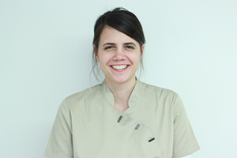

Noémie Storms
MDS algemene tandheelkunde, RU Gent (2015)
Omringd door een team sympathieke en competente medewerkers, is mijn beroep als tandarts een dagelijks plezier. Ik heb de nieuwe praktijk zo ontworpen dat alle werkruimtes rondom de centrale, transparante, sterilisatieruimte liggen, waardoor we een zeer nauw contact met elkaar hebben en elkaar makkelijk met raad en daad kunnen bijstaan. Duurzaamheid is mijn motto. Niet alleen voor uw gebitsherstel. Ook met het zero-energie gebouw doe ik mijn kleine bijdrage aan duurzaamheid door mee te streven naar een emissie-arme wereld. We hopen dat velen mee deze weg in zullen slaan.

Kirsten van de Riet
Assistente